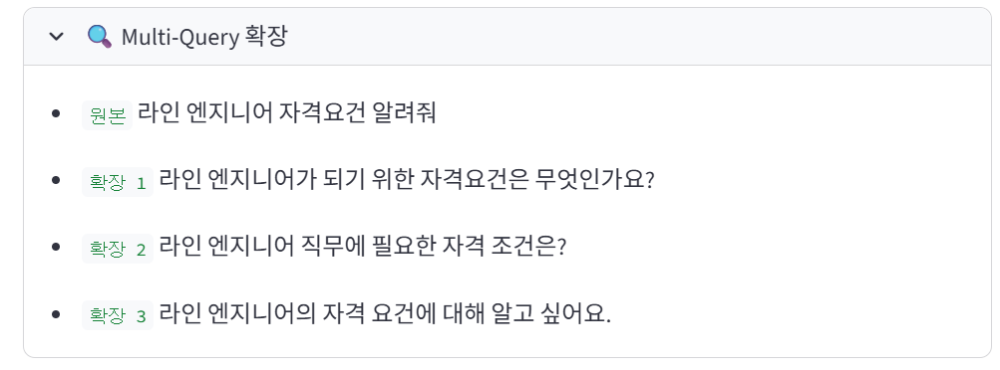
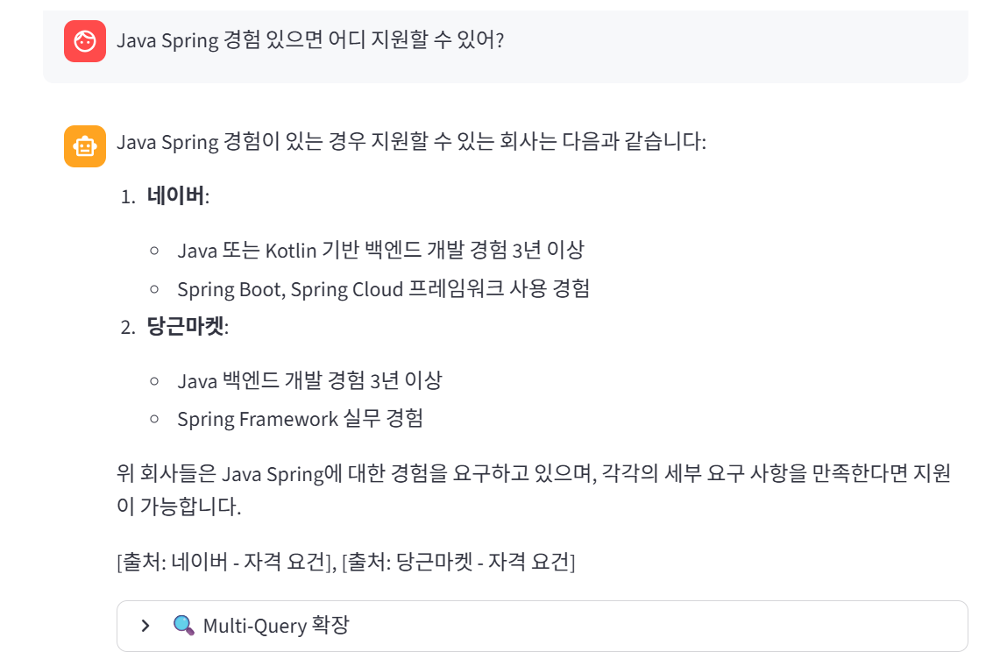
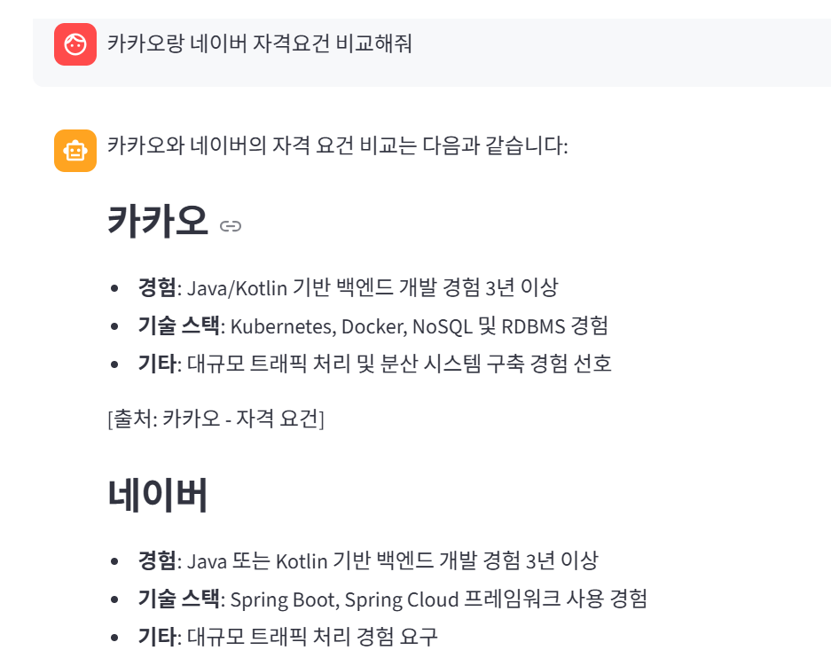

Advanced
RAG
4주차에서 기본 RAG를 만들었지만
질문 방식이 달라지거나 키워드가 정확해도 못 찾는 경우가 있었다.
질문을 여러 표현으로 확장해서 검색 커버리지 향상
BM25 키워드 + Vector 의미 검색 결합
작은 청크로 검색, 큰 청크로 답변
사람마다 같은 질문을 다르게 표현한다. GPT로 질문을 3개 더 만들어서 총 4번 검색한 뒤 결과를 합친다. 짧고 모호한 질문일수록 효과가 크다.
답변 후 🔍 Multi-Query 확장 expander를 열면
원본 + 확장 쿼리 3개가 나온다

Vector 검색은 의미가 비슷한 문서를 잘 찾지만 정확한 키워드는 BM25가 더 잘 찾는다. RRF(순위 기반 점수 합산)로 두 결과를 공평하게 결합한다.
📎 참조 출처에 나온 회사들이 해당 기술을 실제로 요구하는 회사인지 확인

청크가 작으면 검색은 정확하지만 GPT에게 줄 맥락이 부족하다. 200자 청크로 검색하고, 600자 부모 청크를 GPT에게 전달하면 둘 다 잡을 수 있다.
4주차보다 답변이 더 길고 구체적으로 나오면 Parent 청크가 잘 전달된 것

LLM이 아무리 좋아도 엉뚱한 청크를 주면 틀린 답변이 나온다.
검색이 좋아야 답변이 좋아진다.
질문 방식이 달라도
놓치지 않는다
의미 + 키워드
서로 보완
검색 정확도 +
답변 품질 동시에
기법 하나하나는 단순한데, 조합하면 전혀 다른 결과가 나온다는 걸 직접 확인할 수 있었다.